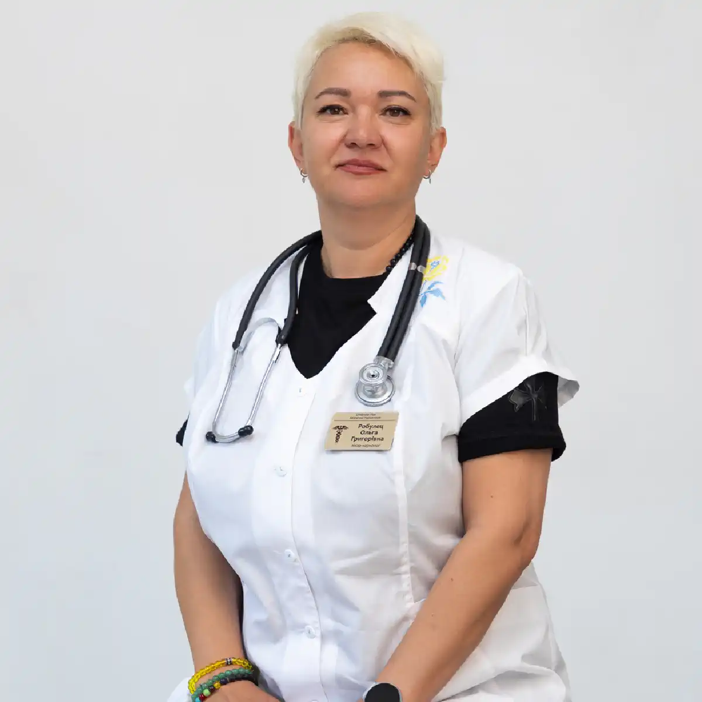

+38(068)
79 72 782
+38(068)
79 72 782Кодировка по методу Довженко
Психотерапевтический путь к трезвости и свободе


Бесплатная консультация, работаем круглосуточно 24/7
Психотерапевтический путь к трезвости и свободе

Дата написания: Обновляется...
Последнее обновление: Обновляется...
Кодирование по методу Довженко — это психотерапевтический способ лечения алкогольной зависимости, направленный на формирование устойчивого отказа от употребления спиртного. Метод основан на психологическом воздействии, мотивационной беседе и внушении установки на трезвый образ жизни. В отличие от медикаментозного кодирования, при таком подходе не используются препараты, вызывающие физическую реакцию на алкоголь, а основное внимание уделяется работе с сознанием, мотивацией и внутренним решением пациента.
Суть метода заключается в том, чтобы помочь человеку осознанно отказаться от алкоголя и закрепить это решение на психологическом уровне. Во время процедуры врач воздействует не на физическое состояние организма, а на установки, мышление и отношение пациента к употреблению спиртного. Такой подход особенно важен, потому что алкогольная зависимость связана не только с физической тягой, но и с привычками, эмоциональными реакциями, стрессом и определёнными моделями поведения.
Метод Довженко относится к направлениям психотерапевтической помощи при алкогольной зависимости и применяется только при добровольном согласии человека. Важным условием является желание пациента прекратить употребление алкоголя, понимание проблемы и готовность соблюдать рекомендации врача после процедуры. Если человек проходит кодирование под давлением родственников или без внутренней мотивации, результат может быть менее устойчивым.
Кодирование по Довженко не стоит воспринимать как мгновенное и единственное решение проблемы зависимости. Метод может стать важным этапом лечения, но его эффективность зависит от мотивации пациента, стадии зависимости, общего состояния, длительности употребления алкоголя и дальнейшей поддержки. Для закрепления результата часто важны консультации нарколога, психотерапия, помощь близких и изменение образа жизни.
Кодирование по Довженко — это метод психотерапевтического воздействия, при котором врач формирует у пациента устойчивую установку на отказ от алкоголя на определённый срок. Процедура проводится без хирургического вмешательства и без введения препаратов, если речь идёт именно о классическом психотерапевтическом варианте метода. Основное воздействие направлено не на физическую реакцию организма, а на сознание, мотивацию и внутреннее решение человека прекратить употребление спиртного.
Главная задача кодирования — помочь пациенту укрепить внутренний запрет на употребление алкоголя, снизить риск срыва и создать психологическую опору для трезвого образа жизни. Во время сеанса доктор работает с мотивацией пациента, объясняет последствия алкоголизации, помогает осознать вред зависимости, формирует негативное отношение к употреблению и поддерживает стремление к восстановлению. Такой подход помогает человеку не просто временно отказаться от спиртного, а закрепить решение жить без алкоголя на уровне личной ответственности.
Метод Довженко особенно важен для пациентов, которые понимают проблему и хотят отказаться от алкоголя, но нуждаются в дополнительной психологической поддержке. Во время процедуры врач помогает усилить уверенность в собственном решении, настроиться на трезвость и сформировать внутренний барьер перед повторным употреблением. При этом большое значение имеет добровольное согласие пациента, потому что без личной мотивации эффективность кодирования может быть значительно ниже.
Метод кодирования по Довженко работает через психологическое воздействие на сознание пациента. Во время процедуры врач использует беседу, элементы внушения и психотерапевтические техники, направленные на формирование устойчивой установки на трезвость. Пациенту объясняют риски употребления алкоголя, возможные последствия срывов и важность полного отказа от спиртного на выбранный срок.
Суть метода заключается в том, чтобы усилить внутреннюю мотивацию человека и закрепить решение не употреблять алкоголь. Врач помогает пациенту сосредоточиться на цели лечения, осознать вред зависимости и сформировать негативное отношение к употреблению спиртного. В результате у человека создаётся психологический запрет, который помогает удерживаться от алкоголя в ситуациях, где раньше мог возникнуть срыв. Во время сеанса большое значение имеет доверие между пациентом и доктором. Человек должен понимать, что кодирование — это не наказание и не давление, а помощь в укреплении собственного решения жить трезво. Чем осознаннее пациент подходит к процедуре, тем легче ему принять установку на отказ от алкоголя и соблюдать рекомендации после кодирования.
При этом результат зависит не только от самой процедуры, но и от готовности человека менять поведение. Если пациент проходит кодирование формально, без желания лечиться, эффект может быть слабым и нестабильным. Поэтому перед процедурой важно честно оценить мотивацию, обсудить с врачом дальнейший план восстановления и понять, какие изменения в образе жизни помогут снизить риск повторного употребления.
Кодирование по методу Довженко подходит пациентам с алкогольной зависимостью, которые осознают проблему и готовы отказаться от употребления спиртного. Такой вариант может рассматриваться для людей, которым важно пройти немедикаментозное кодирование, без подшивки, уколов или препаратов на основе дисульфирама. Метод направлен на работу с мотивацией, внутренним настроем и психологической установкой на трезвость. Чаще всего кодирование по Довженко подходит тем пациентам, которые уже приняли решение прекратить употребление алкоголя, но нуждаются в дополнительной поддержке для закрепления этого решения. Процедура может помочь человеку сформировать внутренний запрет на спиртное, снизить риск срыва и укрепить уверенность в возможности жить без алкоголя.
Метод может подойти пациентам после детоксикации, выхода из запоя и стабилизации общего состояния. Важно, чтобы человек был трезвым, адекватно воспринимал информацию, мог осознанно участвовать в процедуре и понимал цель лечения. Если пациент находится в состоянии интоксикации или тяжёлого похмелья, сначала необходимо восстановить организм и только после этого рассматривать возможность кодирования. Кодирование по Довженко не подходит в случаях, когда пациент не хочет лечиться, находится в состоянии алкогольного опьянения, тяжёлой абстиненции, выраженного психического возбуждения или не может контролировать своё поведение. В таких ситуациях сначала требуется медицинская помощь, стабилизация состояния и консультация нарколога. Также важно учитывать, что метод не заменяет полноценное лечение зависимости. Он может быть эффективнее, если применяется как часть комплексного подхода: после детоксикации, консультации врача, психотерапевтической поддержки и изменения образа жизни.
Подготовка к кодированию по Довженко начинается с консультации врача. На этом этапе доктор уточняет длительность употребления алкоголя, наличие запоев, частоту срывов, общее состояние пациента, перенесённые заболевания, психоэмоциональное состояние и предыдущий опыт лечения. Это помогает понять, подходит ли человеку такой метод, нет ли противопоказаний и нужна ли предварительная медицинская помощь перед процедурой. Перед кодированием пациент должен воздерживаться от алкоголя. Срок трезвости определяется врачом индивидуально, в зависимости от состояния человека, длительности последнего употребления, тяжести запоя и выраженности абстинентных симптомов. Если пациент недавно употреблял алкоголь, плохо себя чувствует или находится после тяжёлого запоя, может потребоваться детоксикация, снятие интоксикации и восстановление организма. Важной частью подготовки является стабилизация физического состояния. Пациент должен быть трезвым, адекватно воспринимать информацию, понимать цель процедуры и осознанно соглашаться на лечение. Если сохраняются сильная слабость, тревожность, бессонница, тремор, скачки давления или другие симптомы после алкоголя, врач может сначала рекомендовать восстановительную терапию.
Также большое значение имеет психологическая подготовка. Человек должен понимать, что кодирование — это не наказание и не принуждение, а помощь в закреплении решения жить трезво. Перед процедурой важно честно оценить свою мотивацию, обсудить с доктором ожидания от лечения и принять необходимость полного отказа от алкоголя. Чем более осознанно пациент подходит к кодированию по Довженко, тем выше шанс сохранить результат и снизить риск повторного употребления. Правильная подготовка помогает не только безопасно провести процедуру, но и настроить человека на дальнейшее восстановление, соблюдение рекомендаций врача и формирование трезвого образа жизни.
Процедура кодирования по Довженко обычно начинается с беседы с врачом. На этом этапе доктор оценивает состояние пациента, уточняет его мотивацию, выясняет длительность употребления алкоголя, наличие запоев, предыдущий опыт лечения и общее самочувствие. Также врач объясняет суть метода, возможные ограничения и правила поведения после сеанса. Пациент должен понимать, на какой срок проводится кодирование, почему важно полностью отказаться от алкоголя и какие последствия может иметь нарушение режима трезвости.
Основная часть процедуры проходит в формате психотерапевтического воздействия. Врач помогает пациенту сосредоточиться на цели отказа от алкоголя, усиливает внутреннюю установку на трезвость и формирует психологический запрет на употребление спиртного. Во время сеанса внимание уделяется не только страху перед срывом, но и осознанному желанию пациента изменить образ жизни, восстановить здоровье и вернуть контроль над своим состоянием. Важную роль во время процедуры играет спокойная обстановка, доверие к доктору и готовность пациента воспринимать информацию. Кодирование по Довженко не проводится формально: человек должен быть трезвым, понимать смысл лечения и добровольно соглашаться на процедуру. Чем выше внутренняя мотивация пациента, тем легче ему принять установку на отказ от алкоголя и соблюдать рекомендации после сеанса.
После процедуры пациент получает рекомендации по дальнейшему восстановлению. Ему объясняют, как избегать провоцирующих ситуаций, что делать при появлении тяги к алкоголю и почему важно продолжать работу над зависимостью даже после кодирования. Также врач может порекомендовать дополнительные консультации, психотерапевтическую поддержку или наблюдение у нарколога, если есть риск повторного срыва. Кодирование по Довженко помогает закрепить решение жить трезво, но дальнейший результат во многом зависит от самого пациента. После сеанса важно изменить привычки, избегать употребляющего окружения, не проверять действие кодирования и внимательно относиться к своему эмоциональному состоянию.
Продолжительность сеанса кодирования по методу Довженко зависит от состояния пациента, уровня его мотивации, формата работы врача и особенностей конкретной клиники. Обычно процедура занимает от одного до нескольких часов, включая предварительную беседу, психологическую подготовку, сам сеанс кодирования и рекомендации после процедуры. Важно, чтобы пациент не просто присутствовал на сеансе, а осознанно воспринимал информацию и понимал цель лечения.
Перед началом кодирования доктор оценивает общее состояние человека, уточняет длительность употребления алкоголя, наличие запоев, предыдущий опыт лечения и готовность пациента к трезвости. Если человек находится в стабильном состоянии, трезв и мотивирован на отказ от алкоголя, процедура может пройти в стандартном формате. Если же есть тревожность, сомнения, эмоциональное напряжение или страх перед лечением, врач может уделить больше времени подготовительной беседе. Иногда пациенту может понадобиться не только один сеанс, но и дополнительная консультация перед процедурой. Это особенно важно, если у человека были длительные запои, выраженная тревожность, сомнения в лечении или предыдущие срывы после кодирования. Дополнительная беседа помогает лучше подготовиться, понять суть метода, снизить внутреннее сопротивление и сформировать более устойчивую мотивацию.
Не стоит ориентироваться только на длительность процедуры. Более важны качество подготовки, состояние пациента, опыт врача и дальнейшее сопровождение. Даже короткий сеанс не будет эффективным, если человек не готов к трезвости, а длительная процедура не заменит полноценного лечения зависимости. Кодирование по Довженко даёт лучший результат тогда, когда пациент осознанно принимает решение отказаться от алкоголя и готов соблюдать рекомендации после сеанса.
Стоимость кодирования по методу Довженко начинается от 15000 грн.
| Популярные услуги | Цена |
|---|---|
| Консультация нарколога | От 1500 грн |
| Капельница от алкоголя | От 2199 грн |
| Вывод из запоя на дому | От 2199 грн |
| Кодирование от алкоголизма | От 6000 грн |
Кодирование по Довженко может проводиться на разный срок. Обычно период трезвости выбирается индивидуально и обсуждается с пациентом до процедуры. Это может быть несколько месяцев, один год, несколько лет или другой срок, который врач считает целесообразным с учётом состояния человека, его мотивации, опыта предыдущего лечения и готовности соблюдать рекомендации после сеанса. Срок кодирования важен не только как формальное ограничение, но и как психологическая опора для пациента. Он помогает человеку поставить перед собой понятную цель, настроиться на трезвость и удерживаться от алкоголя в течение определённого периода. Для многих пациентов наличие конкретного срока помогает легче пройти первые месяцы отказа от спиртного, когда особенно важно изменить привычки, восстановить организм и научиться справляться со стрессом без алкоголя.
Однако сам по себе срок кодирования не гарантирует полного избавления от зависимости. Если человек воспринимает процедуру только как временный запрет и не меняет образ жизни, после окончания срока может сохраняться риск возвращения к употреблению. Поэтому важно использовать период кодирования для полноценного восстановления: нормализации сна, укрепления психоэмоционального состояния, улучшения отношений с близкими и формирования новых трезвых привычек.
После окончания действия кодирования не стоит возвращаться к прежнему образу жизни или проверять, «прошла ли тяга». Алкогольная зависимость требует внимательного отношения даже после длительного периода трезвости. Если у пациента появляются тревожность, навязчивые мысли об алкоголе, эмоциональные срывы или желание снова выпить, лучше заранее обратиться за консультацией к врачу. Лучший результат достигается тогда, когда кодирование становится началом полноценного восстановления, а не единственной мерой. Пациенту важно менять привычки, избегать ситуаций риска, укреплять мотивацию и при необходимости обращаться за психологической поддержкой. Такой подход помогает не просто выдержать срок кодирования, а сформировать более устойчивую трезвость и снизить вероятность повторного срыва.
Эффективность кодирования по методу Довженко зависит от нескольких факторов: мотивации пациента, стадии алкогольной зависимости, длительности употребления, наличия запоев, состояния нервной системы, поддержки семьи и готовности менять образ жизни. Чем сильнее внутреннее желание человека отказаться от алкоголя, тем выше вероятность устойчивого результата после процедуры. Метод может помочь пациенту сформировать психологический барьер перед употреблением спиртного и удержаться от срыва. Во время кодирования у человека закрепляется установка на трезвость, усиливается понимание последствий употребления и формируется внутренний запрет на алкоголь. Для многих пациентов это становится важной опорой в первые месяцы отказа от спиртного, когда риск возвращения к старым привычкам особенно высок.
Однако при выраженной алкогольной зависимости одного кодирования может быть недостаточно. Если у человека сохраняется сильная тяга, не проработаны причины употребления, есть постоянные стрессы, конфликты или пьющие люди в окружении, риск повторного срыва остаётся. В таких случаях кодирование может дать временный результат, но без дальнейшей поддержки человеку будет сложнее сохранить трезвость надолго.
Поэтому кодирование по Довженко лучше рассматривать как часть комплексного подхода. Оно может стать важным этапом лечения, но для долгосрочного результата часто нужны психотерапия, работа с мотивацией, восстановление организма, поддержка близких и наблюдение у нарколога. Такой подход помогает не только отказаться от алкоголя на выбранный срок, но и постепенно изменить отношение к спиртному, укрепить самоконтроль и снизить вероятность повторного употребления.
Одно из главных преимуществ кодирования по Довженко — отсутствие медикаментозной нагрузки на организм. В классическом варианте метод не требует введения препаратов, подшивки или уколов, поэтому подходит пациентам, которые ищут психотерапевтический способ отказа от алкоголя. Это особенно важно для людей, которые не хотят использовать медикаментозные методы или имеют опасения по поводу лекарственной нагрузки.
Ещё одно преимущество — работа с внутренней мотивацией. Во время процедуры пациент не просто получает запрет на употребление, а осознаёт последствия алкоголизации, укрепляет решение жить трезво и формирует более ответственное отношение к своему состоянию. Такой подход помогает человеку воспринимать лечение не как внешнее давление, а как собственный выбор и шаг к восстановлению.
Метод Довженко также помогает сформировать психологическую опору на период трезвости. Пациент получает внутреннюю установку на отказ от спиртного, что может снижать риск импульсивного употребления в стрессовых ситуациях. При хорошей мотивации и соблюдении рекомендаций врача кодирование становится важным этапом на пути к стабильному образу жизни без алкоголя. Также метод может быть удобен тем, кто хочет пройти кодирование конфиденциально и без длительного пребывания в клинике. Процедура проводится относительно быстро, а после неё пациент может вернуться к обычной жизни, соблюдая рекомендации врача и режим трезвости.
Закодироваться по Довженко без согласия пациента нельзя. Этот метод основан на психотерапевтическом воздействии, осознанном участии человека и его внутренней готовности отказаться от алкоголя. Во время процедуры пациент должен понимать суть кодирования, воспринимать информацию, соглашаться с целью лечения и добровольно принимать решение о трезвости. Без личного согласия такой подход теряет смысл, потому что кодирование работает не через принуждение, а через мотивацию и психологическую установку.
Если пациент не хочет лечиться, сопротивляется процедуре или проходит её только под давлением родственников, результат может быть слабым или нестабильным. В таких случаях человек может воспринимать кодирование как наказание, ограничение или попытку контроля со стороны близких. Это снижает доверие к врачу, усиливает внутреннее сопротивление и повышает риск срыва после процедуры. Принуждение в лечении зависимости обычно не помогает сформировать устойчивую трезвость. Человек должен понимать, зачем он проходит кодирование, какие ограничения принимает, на какой срок отказывается от алкоголя и какую ответственность берёт на себя после процедуры. Осознанное участие пациента — одно из главных условий успешного результата.
Родственники могут помочь человеку прийти к решению, но не должны пытаться заменить его личную мотивацию. Лучше спокойно поговорить с пациентом, объяснить риски дальнейшего употребления, рассказать о возможных последствиях запоев и предложить консультацию нарколога. Иногда именно первая беседа с врачом помогает человеку лучше осознать проблему и сделать шаг к лечению. Поддержка близких особенно важна на этапе принятия решения. Не стоит давить, угрожать или заставлять человека кодироваться силой. Более эффективный подход — проявить спокойствие, показать готовность помочь, предложить безопасный вариант лечения и поддержать пациента, если он сам соглашается начать путь к трезвости.
Мотивация перед кодированием по Довженко имеет ключевое значение. Метод работает не только через внушение, но и через внутреннее согласие пациента с необходимостью трезвости. Если человек сам понимает проблему, осознаёт последствия употребления алкоголя, хочет остановиться и готов менять свою жизнь, процедура имеет больше шансов дать устойчивый результат.
Перед кодированием важно, чтобы пациент не воспринимал лечение как давление со стороны родственников или временное ограничение. Человек должен понимать, что отказ от алкоголя нужен прежде всего ему самому: для восстановления здоровья, нормализации отношений с близкими, возвращения к работе, спокойной жизни и контролю над своим состоянием. Именно личное желание изменить ситуацию становится основой для успешного кодирования.
Без мотивации кодирование может восприниматься как принуждение или формальная процедура. В таком случае пациент может ждать окончания срока, искать способы нарушить запрет или быстро вернуться к употреблению алкоголя после первого стресса. Если внутреннего решения жить трезво нет, психологическая установка будет слабее, а риск срыва значительно выше.
Мотивация помогает человеку не просто отказаться от спиртного, а выстраивать новую модель поведения. Пациент начинает избегать провоцирующих ситуаций, внимательнее относится к своему эмоциональному состоянию, лучше соблюдает рекомендации врача и понимает, почему важно не возвращаться к прежним привычкам. Он учится воспринимать трезвость не как наказание, а как возможность восстановить здоровье и качество жизни. Именно поэтому перед кодированием по Довженко часто проводится предварительная беседа с доктором. Врач помогает пациенту разобраться в причинах употребления, оценить последствия зависимости и укрепить решение отказаться от алкоголя.
Кодирование по Довженко отличается от медикаментозного кодирования прежде всего механизмом воздействия. Метод Довженко основан на психотерапии, внушении и формировании устойчивой установки на трезвость. Во время процедуры врач работает с сознанием пациента, его мотивацией, отношением к алкоголю и внутренней готовностью отказаться от употребления. Основная цель — помочь человеку осознанно принять решение жить без спиртного и закрепить этот выбор на психологическом уровне.
Медикаментозное кодирование связано с применением препаратов, которые могут вызывать негативную реакцию организма при употреблении алкоголя. В этом случае основной механизм воздействия строится на биохимическом факторе и страхе возможных последствий после приёма спиртного. Пациент понимает, что употребление алкоголя может привести к резкому ухудшению самочувствия, поэтому воздерживается от него.
При методе Довженко акцент делается не на препаратах, а на психологической установке, мотивации и осознанном отказе от алкоголя. Такой вариант часто выбирают пациенты, которые не хотят использовать медикаментозные методы, опасаются лекарственной нагрузки на организм или имеют противопоказания к препаратам. В классическом варианте кодирование по Довженко не требует уколов, подшивки или приёма лекарств.
При этом нельзя сказать, что один метод подходит абсолютно всем. У каждого пациента своя история зависимости, разная длительность употребления алкоголя, состояние здоровья, уровень мотивации и риск срыва. Одним людям больше подходит психотерапевтическое кодирование, другим — медикаментозная поддержка, а третьим необходим комплексный подход с детоксикацией, психотерапией, наблюдением нарколога и дальнейшей реабилитацией. Окончательный выбор метода должен делать врач после консультации. Доктор оценивает состояние пациента, наличие запоев, хронических заболеваний, психоэмоциональное состояние, готовность к лечению и предыдущий опыт кодирования.
Риск срыва после кодирования сохраняется, особенно если пациент не меняет образ жизни и продолжает находиться в ситуациях, связанных с употреблением алкоголя. Кодирование помогает сформировать психологический запрет и укрепить установку на трезвость, но оно не устраняет автоматически все причины зависимости. Если человек возвращается к прежнему окружению, привычкам, стрессам и конфликтам, вероятность повторного употребления может возрастать.
Провоцирующими факторами могут быть эмоциональное напряжение, семейные конфликты, стресс на работе, общение с пьющим окружением, одиночество, тревожность, отсутствие поддержки и уверенность в том, что одной процедуры достаточно. Иногда пациент после кодирования чувствует временное облегчение и перестаёт уделять внимание профилактике срыва. Это может привести к тому, что при первой сложной ситуации появляется желание снова употребить алкоголь.
Чтобы снизить риск срыва, важно соблюдать рекомендации врача, полностью избегать алкоголя в любых количествах, не проверять действие кодирования и не посещать ситуации, где высок риск употребления. Также важно заранее продумать, как действовать при появлении тяги, тревоги, раздражительности или желания «сорваться». В такие моменты лучше не оставаться один на один с проблемой, а обратиться за поддержкой к врачу, близким или психологу.
Большое значение имеет изменение привычного образа жизни. Пациенту важно избегать компаний, где употребляют алкоголь, восстановить режим сна, снизить уровень стресса, заняться здоровыми делами и постепенно формировать новые способы отдыха без спиртного. Чем больше в жизни появляется стабильности, поддержки и понятных целей, тем легче удерживать трезвость после кодирования. Хороший результат даёт дополнительная психотерапевтическая поддержка. Работа с психологом или наркологом помогает разобраться с причинами употребления, научиться справляться со стрессом без алкоголя, укрепить мотивацию и выстроить более устойчивую модель поведения.
Анонимное кодирование по Довженко позволяет пациенту получить помощь без огласки, лишнего внимания и страха осуждения. Для многих людей конфиденциальность имеет большое значение, потому что алкогольная зависимость часто сопровождается стыдом, тревогой, внутренним напряжением и опасением за репутацию. Именно страх, что о проблеме узнают посторонние, нередко мешает человеку своевременно обратиться к врачу.
Обращение к врачу проводится деликатно и с уважением к пациенту. Доктор уточняет состояние человека, его жалобы, длительность употребления алкоголя, мотивацию к лечению и готовность отказаться от спиртного. Вся информация о пациенте, причине обращения и проведённой процедуре не разглашается третьим лицам. Такой подход помогает человеку чувствовать себя спокойнее и быстрее принять решение о начале лечения.
Анонимность особенно важна для тех, кто долго откладывал обращение за помощью из-за страха постановки на учёт, обсуждения со стороны окружающих или негативной реакции близких. Возможность пройти кодирование конфиденциально снижает эмоциональное напряжение и помогает пациенту сосредоточиться не на страхе огласки, а на главной цели — отказе от алкоголя и восстановлении нормальной жизни.
Конфиденциальное кодирование по Довженко помогает сделать первый шаг к трезвости в безопасной и уважительной атмосфере. Пациент получает возможность пройти процедуру без лишнего стресса, обсудить с врачом свои переживания и получить рекомендации по дальнейшему восстановлению. Такой формат особенно важен, когда человеку нужна не только медицинская помощь, но и поддержка, спокойствие и уверенность в сохранении приватности.
Консультация нарколога перед кодированием по Довженко необходима для оценки состояния пациента и выбора безопасного формата лечения. Перед процедурой важно понять, подходит ли человеку этот метод, готов ли он к трезвости и нет ли факторов, которые могут помешать проведению кодирования. Врач уточняет длительность употребления алкоголя, частоту запоев, наличие хронических заболеваний, психоэмоциональное состояние, предыдущий опыт лечения и отношение пациента к отказу от спиртного.
Во время консультации доктор оценивает не только физическое состояние, но и уровень мотивации пациента. Для метода Довженко это особенно важно, потому что процедура основана на осознанном участии человека и его внутренней готовности отказаться от алкоголя. Если пациент сомневается, боится процедуры или проходит лечение под давлением родственников, врач может объяснить суть метода, ответить на вопросы и помочь человеку лучше понять цель кодирования.
Также на консультации доктор рассказывает, как проходит кодирование, какие условия нужно соблюдать до и после процедуры, на какой срок может проводиться кодирование и в каких случаях метод может быть противопоказан. Пациент узнаёт, почему перед сеансом важно воздерживаться от алкоголя, почему нельзя проходить процедуру в состоянии опьянения или тяжёлой абстиненции и какие рекомендации нужно соблюдать после кодирования.
Если пациент находится после запоя или алкогольной интоксикации, врач может сначала рекомендовать детоксикацию и восстановление организма. Это необходимо для того, чтобы человек был в трезвом и стабильном состоянии, мог адекватно воспринимать информацию и осознанно участвовать в процедуре. В некоторых случаях перед кодированием требуется снять интоксикацию, нормализовать сон, уменьшить тревожность, стабилизировать давление и общее самочувствие. Консультация помогает избежать формального подхода и подобрать лечение индивидуально. Кодирование по Довженко может стать важным шагом к отказу от алкоголя, но для устойчивого результата важно сочетать его с мотивацией, медицинским наблюдением и дальнейшей работой над зависимостью.
Для консультации нарколога звоните: +38(050-021-69-57)

Статья проверена экспертом
Могучев Станислав
Врач терапевт, ординатор
Возможно интересная статья:
Янтарная кислота, Бетаргин и Энтеросгель при алкогольной интоксикации

Да, мы строго соблюдаем полную конфиденциальность на всех этапах лечения. Информация о пациенте, диагнозе и прохождении терапии не передаётся третьим лицам. Обращение к нам не влечёт постановку на учёт. Вы можете быть уверены в безопасности и анонимности.
Программа лечения разрабатывается индивидуально после консультации со специалистом. Учитываются вид зависимости, её длительность, физическое и психологическое состояние пациента. Такой подход позволяет повысить эффективность терапии и снизить риск срыва. Мы не используем шаблонные решения.
Да, мы сопровождаем пациентов и после основного курса лечения. Проводятся консультации, рекомендации по адаптации и профилактике рецидивов. При необходимости возможна дальнейшая психологическая поддержка. Это помогает сохранить результат и вернуться к полноценной жизни.
Александр

Решила сделать укол от алкоголизма по рекомендации подруги, которая проходила эту процедуру в этом же центре. Я сомневалась, но врачи всё объяснили, успокоили. После укола не чувствую тяги к алкоголю, хотя раньше сложно было представить день без выпивки. Сейчас наслаждаюсь трезвостью, чувствую себя намного лучше.
Анонимно
Дуже довго не міг самостійно позбавитися залежності, тому зважився на підшивку. Процедура пройшла успішно, і з того часу я навіть не думаю про спиртне. Страх перед можливими наслідками допомагає триматися на плаву, а підтримка фахівців – величезна підмога у цьому нелегкому шляху. Центр надає як фізичну, а й моральну допомогу. Вдячний їм за другий шанс.
Анонимно
Я никогда не думал, что психологическое воздействие может настолько сильно повлиять на мою жизнь. Врач помог осознать всю серьезность ситуации, и теперь алкоголь не вызывает у меня никакого интереса. Процедура безопасна и эффективна, рекомендую тем, кто хочет по-настоящему изменить свою жизнь.
Анонимно
Я прошла кодирование гипнозом, и это было удивительное переживание. Во время сеанса я почувствовала глубокое расслабление, а потом – будто внутри что-то изменилось. Сейчас я свободна от алкоголя и наслаждаюсь этим состоянием. Благодарю центр за профессионализм и заботу! Отдельная благодарность Станиславу Вячеславовичу
Анонимно
Чесно кажучи, боявся рецидиву, але з процедури минуло півроку, і я навіть не думаю про випивку. Життя почало змінюватися на краще. Дякуємо лікарям за підтримку та мотивацію!
Анонимно
Після багаторічної боротьби із залежністю вирішила звернутись в клінку. Спочатку переживала, але лікарі дуже докладно розповіли про процес та можливі наслідки. Зараз я не п’ю вже 8 місяців і почуваюся чудово. Я така щаслива, що знайшла цей центр і знайшла контроль над своїм життям.
Анонимно
Метод Долженко казался мне странным, но я решил попробовать. Оказалось, что это не просто кодировка, а глубокая работа с психикой. Это позволило мне кардинально изменить отношение к алкоголю. Уже год я не пью, и не планирую возвращаться к прежней жизни. Простое человеческое спасибо!
Анонимно
Гипноз помог мне избавиться от постоянной тяги к алкоголю. После сеансов я заметила, что стала спокойнее и увереннее в себе. Теперь алкоголь меня больше не интересует. Центр мне очень помог, и я благодарна за их заботу и поддержку.
Номер телефона:
+380 (68) 797 27 82
+380 (50) 021 69 57
Адрес наркологического центра вашего города уточняйте по
телефону
Работаем в: Киеве, Одессе, Львове, Харькове, Днепре,
Запорожье, Черкассах, Чугуеве, Черноморске, Каменском
Telegram: t.me/umbrellaplus
График работы: Круглосуточно